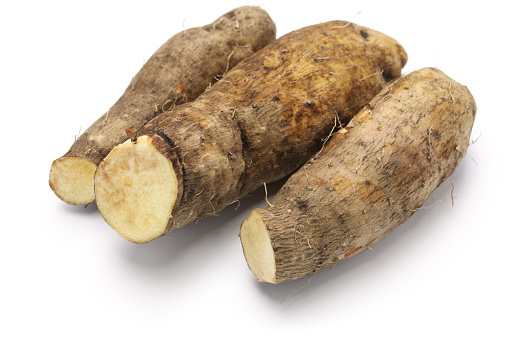

1. Seasons for Growing Yam

Yams thrive in warm climates with a long growing season. The ideal seasons for yams are:
- Spring: Plant yam tubers in early spring when the soil temperature is consistently above 65°F (18°C).
- Summer: Maintain regular watering and care throughout the growing season to ensure healthy tuber development.
- Autumn: Harvest yams in late autumn, just before the first frost.